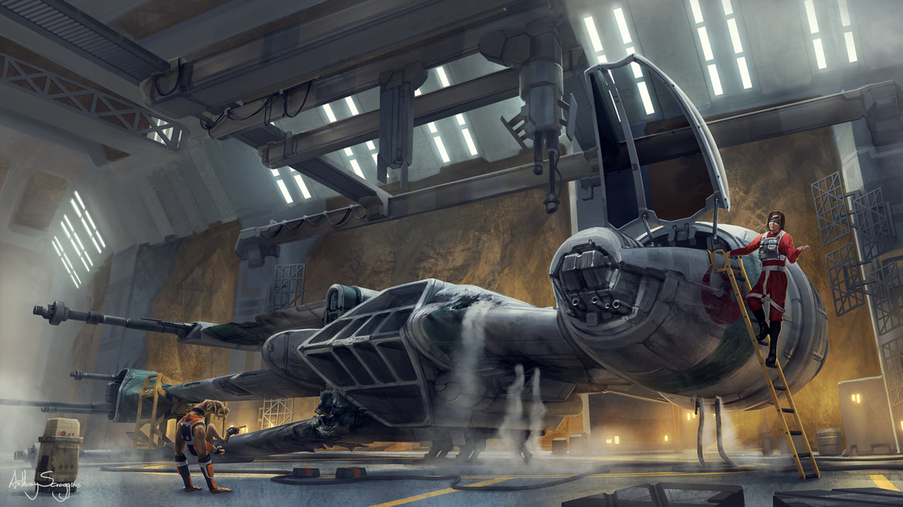
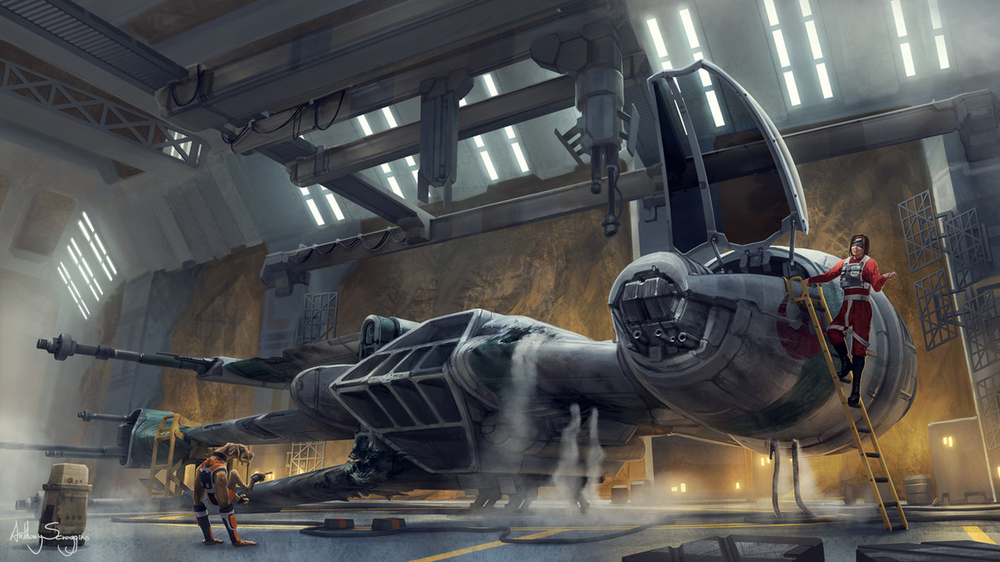

X-wing starfighters were a type of starfighter marked by their distinctive S-foils that resembled an 'X' in attack formation. During the Galactic Civil War, the Rebel Alliance used T-65B X-wing starfighters in a number of battles, including the Battle of Yavin and the Battle of Endor.
Approximately thirty years later, a different variation of X-wing, the T-70 were used by the Resistance, whereas a more advanced model, the T-85, was used by the New Republic Starfleet.
Manufacturer: Incom Corporation
Class: Assault starfighter
Armaments: 4 Laser Cannons, Proton Torpedo Launcher(s)
Crew: Pilot, Astromech droid
Length: 12.5 meters
Beam: 10.2 meters
Height: 4.2 meters


 
